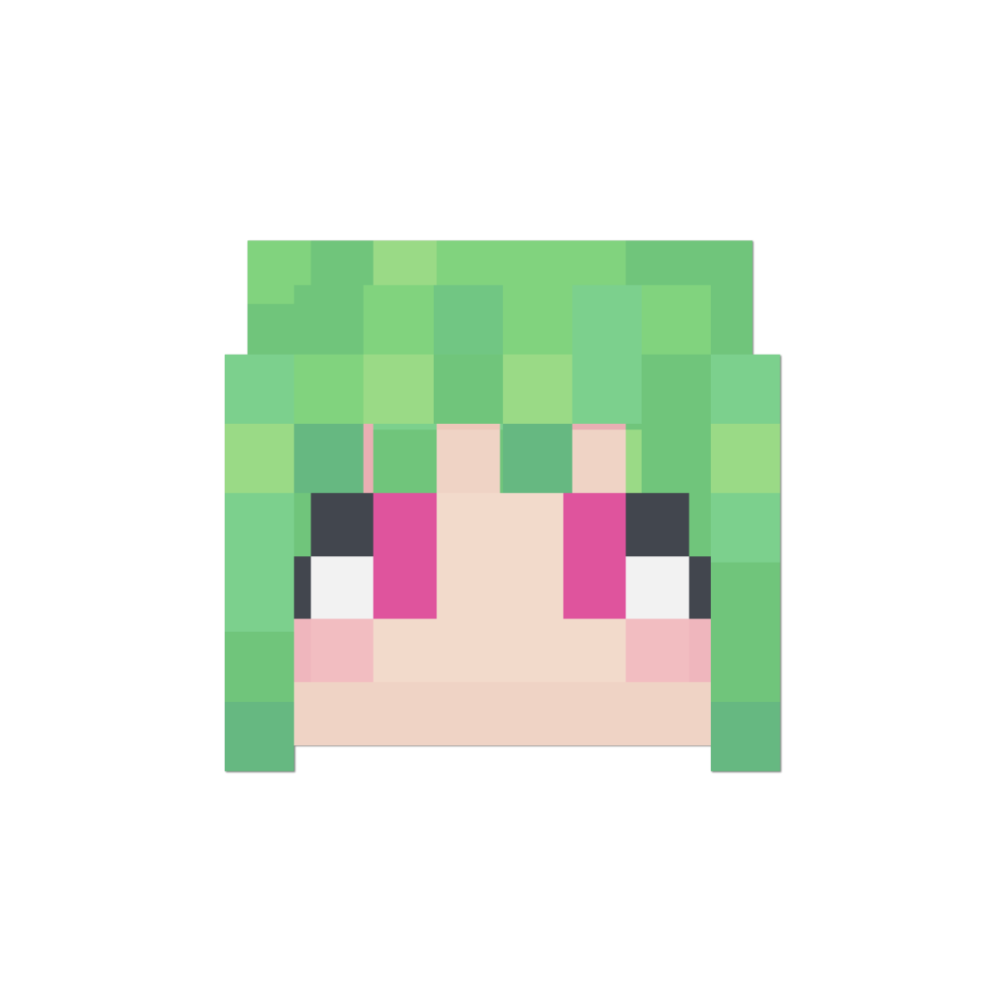
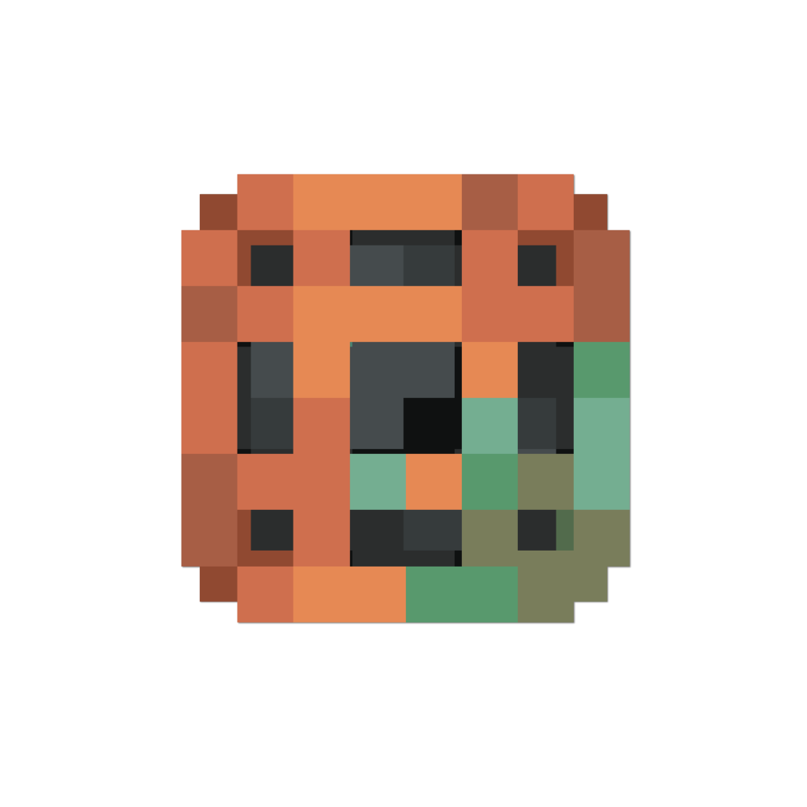

Таймлайн
История вселенной основана на настоящей истории Земли, но с некоторыми сверхъестественными изменениями.
События до игры
Временная линия вселенной уходит далеко в прошлое и разворачивается вплоть до наших дней. Чтоб не запутаться, рекомендуется ознакомиться со списком известных значимых событий и дат:| + | Примерно 120 лет назад — рождение  Ифритки. Ифритки. |
| + | 117 лет назад — рождение Принцессы. |
| 100 лет назад — Принцесса была заточена глубоко под водой. | |
| От 100 до ??? лет назад — начинается война между Королевством Морская пена и Королевством аксолотлей. | |
| + | 72 года назад — рождение  Смотрителя маяка. Смотрителя маяка. |
| + | 49 лет назад — рождение  капитана Юхава. капитана Юхава. |
30 лет назад —  Жёлтый кролик селится на острове. Жёлтый кролик селится на острове. |
|
| + | 23 года назад — рождение  Беатрис. Беатрис. |
| Несколько лет назад — окончание войны. Все рыболюди были превращены в морских стражей. Королевство аксолотлей уничтожено. | |
За несколько дней до игры (по словам Тето, примерно три) —  Тето оказывается на острове. Тето оказывается на острове. |
|
| За один день до игры — капитан Юхав и Наутилус оказываются на острове. Наутилус изучает остров и ждёт, пока Капитан проснётся. |
События игры
Первый день
Дата: 28.07.2025Присутствовали (7): Принцесса,
капитан Юхав, Тето, Ифритка, Жёлтый кролик, Наутилус,  Красная кошка.
Красная кошка.Капитан Юхав просыпается после кораблекрушения. Его боцман Наутилус уже разгуливал по острову, изучая окрестности. Их встретил Жёлтый кролик, уверяющий, что он здесь главный, ведь живёт здесь уже 30 лет. Из воды выходит разбуженная Принцесса. Все знакомятся. Капитан замечает вдалеке силуэт эндерксолотля и ведёт всех в погоню за ним. Он поделился тем, что ему приходилось пережить атаку стаи эндерксолотлей в открытом море, и он потерял в битве с ними глаз. Погоня длилась очень долго, потому что эндерксолотль всегда оказывается на шаг впереди из-за своей способности телепортации, но Капитан не сдавался и вёл команду за собой.
Все утомились, и Жёлтый кролик предложил переночевать у него дома. Когда они дошли, кто-то по неосторожности взорвал часть дома Крипером. Стоило им ступить на порог, как оказалось, что дом заражён чешуйницами. Из кирпичей, из которых он был построен, вылезло много чешуйниц, и так от жилища Кролика почти ничего не осталось. Он сказал, что не хочет никого видеть и прогнал их.
Было принято решение и самим основаться на этом острове. Под руководством капитана Юхава была начата постройка дома из вишнёвого дерева. Он был раскритикован Принцессой, и она отказалась работать.
Показать диалог ()
Во время постройки к ним присоединился эндерксолотль и предложил временное перемирие, так как он тоже хочет выбраться с этого острова. Он назвался Тето и обвинил Юхава в том, что тот продавал его сородичей в рабство. В ответ Юхав обвинил эндерксолотлей в том, что те нападали на его корабль стаей и лишили глаза. Также он добавил, что лично был против торговли аксолотлями, но времена были тяжёлые. Тето ещё какое-то время следил за тем, как Юхав строил дом, и критиковал его умения.
Показать диалог ()
Принцесса Аквария добыла немного железа под водой. Капитан Юхав предложил ей сходить в найденную им пещеру. Вместе они дошли до Тёмных глубин и встретили Хранителя. После проигранного сражения они решили закончить на сегодня с шахтами.
Дневники
(Орфография и пунктуация авторов сохранены)
Я...потерял её. Я даже не вспомню как, не вспомню кем, лишь знаю что я потерял её навсегда. Моё сердце лишь счастливо, что мой верный боцман Наутилус вместе со мной, ха-ха! После крушения нас прибило на этот загадочный
1
безлюдный остров.Но, к счастью или сожалению, не одинокий. Первым делом мы с Наутилус встретили желтого селдя, что жил в каки-то наполненными крысами руинах, иу. А затем на наши зовы о спасении примчала
2
юная леди из моря - Принцесса Акв... Аквария, так. Говорила о какой-то морской семье, и о том своем "пенном" королевстве или что-то такое. Девочка, конечно, бойкая, и очень ленивая. Я уже молчу про всю её наглость, хех. Но отмечу, из
3
всех здешних обитателей она мне импонирует больше всех. Мы поизучали остров, обсудили прошлое, затем построили скромный домик у пляжа (моего безупречного дизайна)...и пришёл ОН. Чертов Эндерксолотль. Этот холодный взгляд, бледная кожа,
4
фиолетовые жабры и стройная талия, грх...Молчу уже о сквернословном характере этого подонка! Пришлось и с ним заключить "перемирие", но видит Бог — я войду в него своим трезубцем уже совсем скоро! А затем отстроим мою любимую с боцманом,
5
и отправимся в наше новое путешествие, подальше от этих безумцев. Но пока, мы лишь добываем ресурсы да общаемся. Полагаю, было бы куда хуже, будь мы тут с Наутилусом сами...но и не то чтобы я этим сельдям больно рад, тцк...
6
день I
я была втянута в спешный водоворот событий, от количества и красочности которых моя голова раскалывается. чтоб облегчить её ношу, я буду оставлять всё, что знаю, в этом дневнике.
я была втянута в спешный водоворот событий, от количества и красочности которых моя голова раскалывается. чтоб облегчить её ношу, я буду оставлять всё, что знаю, в этом дневнике.
1
этим утром я проснулась в морских глубинах совершенно одна. разбудил меня, кажется, громкий удар чего-то тяжёлого об поверхность земли. будто метеорит упал в нескольких метрах, и, стало быть, должен был оставить кратер. но ничего такого
2
не нашлось. я поспешила всплыть на поверхность, там о чём-то переговаривались люди. после осторожного наблюдения за ними, я пришла к выводу, что они не опасны. мне бы хотелось надеяться, что они смогут помочь мне в поисках
3
королевства. словами не описать мою тревогу об его судьбе. как я обнаружила, мой неспешный сон продлился более ста лет. я не уточняла у других, потому что боюсь или не хочу это принимать. но сей факт витает в воздухе и давит даже на физическом уровне.
4
в рядах новых знакомых были как и морские обитатели, так и человек с роботом. мне несколько стыдно, что я, будучи королевской наследницей, не смогла показать себя как лидер перед моими последователями
5
и вела себя по-детски. но и мне нужно время чтоб встать на ноги и освоиться, будучи настолько сбитой с толку.
со мной не было никаких вещей, кроме трезубца. даже чемодана с одеждой. я одета просто, в скромное платье. думаю, мне придётся
со мной не было никаких вещей, кроме трезубца. даже чемодана с одеждой. я одета просто, в скромное платье. думаю, мне придётся
6
самой шить себе одежду. трезубец такой же острый, каким-то образом не сточеный водой и ходом времени. осматривая периметр острова, я не нашла знакомых мест. похоже, меня занесло достаточно далеко от дома.
7
я делю крышу с людьми, которым также нужна помощь. каждого здесь как-то прибило к этому острову. я питаю сочувствие к каждому, выслушав их истории, и обязуюсь помочь своим подопечным. не хочу давать оценку их личностям
8
или выделять кого-то, потому что в моих глазах мой народ равен. говоря о человеке и роботе, капитан и его боцман, оказавшиеся единственными выжившими после кораблекрушения, показались мне заслуживающими доверия. но нельзя
9
терять бдительность. как и совсем отказываться от социума. пока, после долгой изоляции, у меня совсем нет желания оставаться одной.
10
Мои волосы — волны, песок их не портит
Они пахнут летним бризом и солью
Я руками сжимала трезубец из стали
Как ребёнок, не отпускающий мамы
Мои ноги ослабли, я не чувствую суши
Как не чувствую, что готовит мне будущее
Они пахнут летним бризом и солью
Я руками сжимала трезубец из стали
Как ребёнок, не отпускающий мамы
Мои ноги ослабли, я не чувствую суши
Как не чувствую, что готовит мне будущее
11
1 запись
--------
прошло уже несколько суток с тех пор как меня вынесло на сушу. за это время многое успело произойти.
я познакомился я красной кошкой которая живёт тут.
--------
прошло уже несколько суток с тех пор как меня вынесло на сушу. за это время многое успело произойти.
я познакомился я красной кошкой которая живёт тут.
1
она часто подкармливает меня. я так же познакомился с её подругой - ифриткой из ада. у неё нет имени и она не очень со мной ладит, не смотря на нашу схожесть. хочу узнать её получше.
однако, сегодняшний день наверное
однако, сегодняшний день наверное
2
бал самым насыщенным.
сегодня на остров прибыла целая компания людей которых я раньше здесь не видел. среди них был капитан, из-за чего я старался обходиться с ними аккуратно и первое время просто следил издалека.
сегодня на остров прибыла целая компания людей которых я раньше здесь не видел. среди них был капитан, из-за чего я старался обходиться с ними аккуратно и первое время просто следил издалека.
3
эти грабители терроризировали мой мирный народ десятилетиями. я решил рискнуть и заключить с ним временное перемирие. тем более, он не выглядит особо опасным для меня. слишком самовлюблен и некомпетентен, особенно для своего возраста.
4
но команда у него хорошая. я нашел общий язык с его боцманом наутилусом, и принцессой, чьё имя я не смог запомнить...
я слышал истории про неё. ведёт себя она немного иначе от того какой я представлял их королевскую семью, но она смешная.
я слышал истории про неё. ведёт себя она немного иначе от того какой я представлял их королевскую семью, но она смешная.
5
я подарил ей немного лишних золотых ресурсов, мне показалось принцессам такое нравится.
кого я пока плохо знаю так это морского кролика. стоит держать с ним контакт, я часто дружил с ними в детстве.
кого я пока плохо знаю так это морского кролика. стоит держать с ним контакт, я часто дружил с ними в детстве.
6
мне очень нравится крюк наутилуса. она хорошо с ним обращается. немного похоже на мои жемчужины. не знаю как она терпела юхава больше 15 лет, стальная выдержка. каламбур ненамеренный.
скучаю по дому.
скучаю по дому.
7
Второй день
Дата: 29.07.2025Присутствовали (7):
Смотритель маякановый, Принцесса, капитан Юхав, Тето, Ифритка, Жёлтый кролик, Красная кошка.На Острове находят старого смотрителя маяка. Он одновременно пугает и развлекает всех своим сумасшествием и крайне экстравагантным поведением. От него же узнаётся, что он 72 года, всю свою жизнь, провёл на этом острове.
Жёлтый кролик проводит аукцион, в котором разыгрывает 24 алмаза. Принцесса и Капитан ставят свои ставки, и предложение Капитана оказывается выгоднее. Принцесса злится и запрещает проводить аукционы, пресекая любые чужие попытки обогатиться на других, называя это осквернением «священных земель». Кролик и Капитан всё равно начинают сделку, и Кролик пытается выбить из Юхава больше договорённого. Этот шантаж кажется Принцессе недопустимым, а Капитан был недоволен сначала, но быстро согласился, чувствуя лёгкую наживу. Они с Кроликом спрятались под водой и провели сделку. Затем они всплыли на берег и уже хотели расходиться.
Показать диалог ()
Кролик вернулся к себе домой.
У дома была впервые замечена Ифритка, существо из Ада. Она копала ямы вокруг жилища, чем всех возмутила. Только разобравшись с ней, Капитан и Принцесса заметили Жёлтого кролика, прокапывающегося под домом и подслушивающего их. Они закапывают его нору и выходят на улицу, где на них снова нападает Ифритка. Капитан Юхав предлагает ввести военный режим. Он с Принцессой и Тето начинают рыть ров вокруг дома, который зальют водой, чтоб спастись от нападений Ифритки.
Закончив с ровом, все втроём решают проследить за Жёлтым кроликом. Они находят его занятым благоустройством деревни жителей неподалёку. Кролик рассказывает легенду, которой с ним поделилась его бабушка про другие миры, про Ад и дракона Края. Он показывает спуск в портал в Ад, из которого всякий раз вылезает Ифритка. Когда они спустились, она уже стояла рядом. Принцесса предложила ей временное перемирие, но не услышала ответа.
Показать диалог ()
Потом Тето уговорил Принцессу с Капитаном убрать воду, так как это дом Ифритки.
Дневники
(Орфография и пунктуация авторов сохранены)
Столь беспечные первые сутки и столь опасные вторые...ох, и не поймёшь с чего начать...Все будто пошло не так с начала дня - мой верный боцман куда-то запропостился. Видимо, отправился на экспедецию, или ему нужнл где-то
1
отдохнутью Наверное. Надеюсь. Это последний человек на сей чертовой земле кому вообще можно что-то доверить! Побыстрее бы он вернулся вновь
С утра встретили на острове какого-то...как бы сказать...
С утра встретили на острове какого-то...как бы сказать...
2
...примечательного старика. Судя по форме смотритель маяка? Правда всё что он молол это про свой возраст и своего осла. Ещё и свои зубы нам отдал?? Не хочу думать об этом...
Тот желтый селдь решил устроить "аукцион".
Тот желтый селдь решил устроить "аукцион".
3
Удалось подешмански вырулить себе алмазов, хех. Правда всё время в разговор влезала эта мелкая девочка...Пришлось играть вместе с ней в её защитника, что нас тут разводят, какая-то "священная земля". Ей Богу, тут один краше другого в своих бреднях. Ещё и делится пришлось,
4
ибо ей всё же удалось заметить мою покупку. Тцк. Мы ещё посмотрим кто под кем ходить будет.
И всё же, если быть откровенным в записях, то не было всё так уж и плохо. Делится со мной постоянно, что-то вместе делаем,
И всё же, если быть откровенным в записях, то не было всё так уж и плохо. Делится со мной постоянно, что-то вместе делаем,
5
даже капитаном меня звёт как и подобает...давно меня кто-то так тепло не встречал...нет. Нет нет и нет. Моя доверчивость к рыбной погоне уже привела к одному крушению. Я не обязан подстелятся под ней и просить прощения за обиды. Не говоря уже о том
6
кто здесь вообще старше! Надо быть строже в следующий раз, да. Нельзя доверять никому. Кроме боцмана. И быть на чеку
Говоря о "быть на чеку". У нас уже появляются недруги. Сперва та желтая селдь, с которого я
Говоря о "быть на чеку". У нас уже появляются недруги. Сперва та желтая селдь, с которого я
7
вытащил алмазов. Рылся под нами, следил. Вод же мерзопакость! Было приятно с принцессой его попускать, хехехе. Потом хотели с ним договор заключить, (на наших условиях конечно же) (мы тут сила), да только он совсем поехад будто от своих химикатов.
8
Но кто знает, вдруг мы найдем общий язык. Держать связи всегда хорошо.
А потом к нам начало ломится какая-то лавовая деваха. Пыталась нам дочь сжечь, исподтишка напала. И главное что ни слова не скажет, лишь наступает да бежит.
А потом к нам начало ломится какая-то лавовая деваха. Пыталась нам дочь сжечь, исподтишка напала. И главное что ни слова не скажет, лишь наступает да бежит.
9
Не хватало мне чтоб и в такой дикой местности кто-то меня донимал! Строили вместе с Принцессой и Тето ров. Отмечу, это было так. Забавно. Делали что-то вместе, шутили, даже вместе поплавали под конец. Поверить не могу что нахожу общий язык с морскими...
10
Что этот остров делает со мной...
А под конец все вместе шли преподать урок. Залили яму этого адского чудища водичкой, знай наших! Как же давно я так не веселился на суше. Да и по воде тоже, полагаю. Боже, я как ребёнок...
А под конец все вместе шли преподать урок. Залили яму этого адского чудища водичкой, знай наших! Как же давно я так не веселился на суше. Да и по воде тоже, полагаю. Боже, я как ребёнок...
11
Под конец дня задумываюсь о своём положении здесь. После того диалога со стариком, задумался: сколько к чертям мне ещё тут сидеть?! Мысль оказаться в такой положении пугает до мурашек. Как бы моё тело не отторгало "экипаж", без них
12
мне было бы скудно. Эндерксолотль весьма неплох в битвах, и вместе можем защитить крепость. Хотя я так жажду вырвать эту самодовольную улыбку с лица. Ничего, время ещё придёт. И морская принцесса...всё же приятная деваха.
13
Может, она просто больше человек, чем рыба, и поэтому с ней так спокойно. Не будь она ещё такой карпризной и наглой, тцк. Ей есть чему у меня поучиться! Узнать бы что у неё за родня, конечно. Может, мне перепадут какие золотишки с её "слуг".
14
Хотя и вредить я ей тоже не желаю. Её детская наивность иногда аж бесит, но что-то не дает мне сказать ей это в лицо. Слегка в ней вижу себя, хех.
Весело тут, конечно. Но скоро займусь новым кораблем. Завтра. Наверное.
Весело тут, конечно. Но скоро займусь новым кораблем. Завтра. Наверное.
15
день II
сегодня на острове мы встретили старого смотрителя маяка. он живёт здесь уже как 70 лет. мы провели мало времени вместе, но мне было весело и смешно. мне нарвтяся забавные люди и когда меня развлекают.
сегодня на острове мы встретили старого смотрителя маяка. он живёт здесь уже как 70 лет. мы провели мало времени вместе, но мне было весело и смешно. мне нарвтяся забавные люди и когда меня развлекают.
1
и, если я чуть ли не наизусть помню выступления придворных шутов, человеческий юмор для меня будто глоток свежего воздуха. я немного обучаюсь ему, кажется.
экономика острова развивается и требугает регуляции
экономика острова развивается и требугает регуляции
2
со стороны действующего правителя. сегодня я пыталась пресечь обмен большим количеством ресурсов между рыбой и человеком, который проводился в тайне от других и не подразумевал процентов государству. такими темпами мы можем
3
потерять много средств. сделка состоялась, но только под моим наблюдением, и сделала жёлтого кролика монополистом золотых ресурсов. наши запасы золота пусты. мне следует претендовать на его запасы или направить моих
4
людей в шахты. также, я стала свидетелем попытки вымогательства от кролика, который требовал со второй стороны больше, чем было указано в договоре, и отдал свою часть только после моего давления. я расцениваю такое неуважение к законам
5
со стороны моркого жителя как предательство лично меня. жёлтый кролик встал на по-настоящему скользкий путь, после этого берясь за ещё более аморальные преступления против члена королевской семьи, как слежка и проникновение
6
со взломом. мне жаль смотреть на нравственное падение жителя подводного царства. будь мы в море, он бы давно был задержан и подвержен суду. но на диком острове, не оснащённым ни зданием суда, ни тюрьмами, я могу использовать его
7
как рабочую силу и боевую единицу, пока это выгодно и он не представляет открытой угрозы для жизни окружающих. польза в том, что он кажется храбрым и располагает информацией о других мирах, если это не выдумка.
сегодня мы уже находили
сегодня мы уже находили
8
портал в измерение ада, один из обитателей которого неоднократно нападал на нас на нашей же территории. мы вырыли ров с водой вокруг нашего дома, чтоб в него не могло пройти это существо. из-за него я впервые ощутила огонь, окутывающий всё тело и пробирающий
9
до костей, и не хочу проживать этот опыт снова. я питаю настоящее отвращение ко всей природе этого чудовища, настолько противоестественным оно мне кажется, существующим вопреки любым мирским законам, созданным где-то на задворках вселенной,
10
собрав в себе всё то, что противоречит моей сущности. меня пугает сам факт существования мира, фауна которого наполнена таким. но я не могу упустить большой стратегический потенциал в установлении контроля над адом. обладая его ресур-
11
сами, я смогу укрепить власть здесь. временное заключение: существо враждебно и даром речи не обладает. на переговоры не способно.
сегодня пробовала золотую морковь, её мне приготовил капитан. получилось
сегодня пробовала золотую морковь, её мне приготовил капитан. получилось
12
вкусно, приятно хрустит. просто мысль, но хотелось бы успеть попробовать как можно больше сладостей из человеческой кухни.
хочу сделать себе золотые наплечники и поножи к моей роскошной короне, которую мне ранее
хочу сделать себе золотые наплечники и поножи к моей роскошной короне, которую мне ранее
13
подарил аксолотль тето. ботинки не хочу, мне неудобно в обуви.
мне нравится, как с меня сдувают пылинки, но подумала, не стоит так всех напрягать и начать учиться самостоятельности.
мне нравится, как с меня сдувают пылинки, но подумала, не стоит так всех напрягать и начать учиться самостоятельности.
14
2 запись
--------
сегодня мы построили большой овраг вокруг дома. нас терроризирует та ифритка. моя команда объявила ей войну и залила водой вход в её портал, включая степуньки, но я
--------
сегодня мы построили большой овраг вокруг дома. нас терроризирует та ифритка. моя команда объявила ей войну и залила водой вход в её портал, включая степуньки, но я
1
убрал всё это и отговорил их, за что получил благодарность от ифритки - стрелу в колене.
пока что подружиться с ней не увенчались успехом. я дал ей синий цветок но она его скинула в лаву ТоТ
пока что подружиться с ней не увенчались успехом. я дал ей синий цветок но она его скинула в лаву ТоТ
2
может потом выйдет. когда мы отправимся в этот красный мир на экспедицию.
тем временем меня продолжает подкармливать красная кошка. она пообещала сделать нам с ифриткой два аквариума. она так же носит с собой какой то проигрыватель.
тем временем меня продолжает подкармливать красная кошка. она пообещала сделать нам с ифриткой два аквариума. она так же носит с собой какой то проигрыватель.
3
ещё сегодня мы встретили нового давнего жителя острова - пожилого смотрителя маяка. не знаю где этот маяк правда говоря.
я проснулся от его безумного смеха и вышел на улицу где он общался с тем желтым кроликом. у него был ослик.
я проснулся от его безумного смеха и вышел на улицу где он общался с тем желтым кроликом. у него был ослик.
4
этот старик видимо потерял рассудок находясь здесь в одиночестве. мне его немного жаль. но он очень смешной.
он так же абсолютно унизил юхава. я прежде не видел его настолько расстерянным, даже от моих ответов. ну и поделом.
он так же абсолютно унизил юхава. я прежде не видел его настолько расстерянным, даже от моих ответов. ну и поделом.
5
так же мы попытались стать союзниками с желтым кроликом, но вёл он себя странно и не очень культурно. судя по всему влияние смотрителя маяка.
еще я сегодня завёл птичку :)
и юхав убил голема и кошку :(
еще я сегодня завёл птичку :)
и юхав убил голема и кошку :(
6
все еще думаю о той ифритке. почему она так агрессивно настроена к людям из этого мира? есть ли к ней хоть какой нибудь подход. красная кошка его нашла, интересно как. она не выглядит плохим человеком, скорее просто неадаптированной кбольшому скоплению
7
людей. понимабельно.
наутилус сегодня куда то пропала. не видел её весь день. надеюсь все в порядке.
юхав сегодня обидел принцессу тем что сначала пообещал попробовать нашу морскую кухню но
наутилус сегодня куда то пропала. не видел её весь день. надеюсь все в порядке.
юхав сегодня обидел принцессу тем что сначала пообещал попробовать нашу морскую кухню но
8
быстро слился.
лошара
лошара
9
Третий день
Дата: 01.08.2025Присутствовали (4): Принцесса,
капитан Юхав, Жёлтый кролик, Наутилус.Наутилус возвращается и говорит, что был в одиночной экспедиции. Капитан предлагает Наутилусу и Принцессе вместе куда-нибудь отправиться. Принцесса протягивает Юхаву две карты клада и он ведёт свою команду за ним. Первая точка с кладом оказывается уже разграбленной. Юхав нашёл вторую точку с кладом и смог раскопать его с первой попытки, демонстрируя свои навыки моряка. Вместе они двигаются дальше и находят деревню жителей ещё не тронутую Жёлтым кроликом. Начинается дождь. Капитан говорит что не любит дождь, ведь из-за него намокает форма. В деревне они видят одиноко стоящую лошадь гнедой масти и капитан Юхав протягивает Принцессе седло в качестве подарка. У Принцессы появляется своя лошадь.
Они находят кусок магмы, лежащий посреди поля и списывают это на влияние Ифритки на их земли. Капитан Юхав берёт его в руки и закапывает, чтобы магма не распространялась. Рядом они увидели ещё нескольких лошадей, пасущихся на лугу. Принцессе захотелось взять и их с собой. Капитан волшебным образом достал ещё два седла. Теперь у всех троих были свои кони.
Дальше они передвигались на лошадях, и поэтому столкнувшись с водой начали строить переправу. Юхав спросил Принцессу, не желает ли она покинуть море, предположив, что её народ уже забыл про неё спустя столько лет и её королевство потерпело огромные изменения. Также он добавил, что за тридцать лет в море он ни разу не встречал подобных ей существ. Принцессу это оскорбило и она предположила, что Юхав и не является настоящим моряком. После ссоры они разошлись. Принцесса забрала коня капитана Юхава и вернулась на нём в деревню, которую они находили ранее. Некоторое время спустя по просьбе Юхава её навестил боцман Наутилус удостовериться, что она в порядке. После небольшого разговора он отправился обратно к Капитану, а Принцесса решила проследить за ним, но быстро потеряла из виду. После неудачной попытки найти их она вернулась в деревню, где Капитан с Наутилусом уже искали её. Капитан попросил Принцессу вернуться к путешествию с ними, на что она ответила, что уже пообещала защищать деревню, и не может «бросить свой народ». Перед ними прошёл голем, который с лёгкостью отбил атаку зомби. Увидев это Принцесса обрадовалась, что жители могут постоять за себя сами и поторопилась вернуться в команду Юхава и Наутилуса. Они продолжили путешествие.
Когда они вернулись домой, их встретил Жёлтый кролик. Он выглядел больным. Кролик попросил капитана Юхава об ещё одной сделке. Они снова уединились под водой. Принцесса решила, что ей стоит проследить за ними, и подслушала просьбу Кролика научить его читать в обмен на книгу зачарования «Починка» и 15 алмазов. Они заключили сделку. Капитан Юхав выплыл наружу и рассказал об этом Принцессе и Наутилусу. Принцесса притворилась что не подслушивала их и удивилась настолько простой просьбе от Жёлтого кролика, в её глазах коварного преступника, ставя правдивость слов Капитана под сомнения. Он заверил её, что это правда и намекнул, что поделится алмазами. Все вместе они начали учить Жёлтого кролика алфавиту. Кролик кашлял и на него надели вырезанную тыкву в качестве маски.
Капитану пришла идея в будущем организовывать конные скачки. Вместе с Принцессой они придумали флаг Острова. Весь день Тето не было дома и Капитан, всегда подозревающий его, воспользовался этим. Вместе с Принцессой они пробрались в его комнату и прочли его личный дневник, но не нашли ничего интересного. Принцессу напрягло только то, что судя по записям он пытается подружиться с Ифриткой. Капитан сказал, что Тето нельзя доверять.
Четвёртый день
Дата: 02.08.2025Присутствовали (6):
 Макдиновый, Принцесса, капитан Юхав, Ифритка, Жёлтый кролик,
Макдиновый, Принцесса, капитан Юхав, Ифритка, Жёлтый кролик,  Белый кролик, Красная кошка.
Белый кролик, Красная кошка.Когда Принцесса и Капитан проснулись они обнаружили, что их дом был подвергнут нападкам со стороны Ифритки. Их ров с водой был высушен, вокруг была разлита лава, а флаг был изрисован. Вдвоём они убирали её следы и увидели рядом сундук, подписанный «подарком». Разолённые, они отказались принимать что-либо от Ифритки и сожгли вещи. К дому прибежал Белый кролик, который представился братом Жёлтого. Он долго доставал Принцессу и Капитана, поджигая всё вокруг, и требовал с них алмазы. Он ушёл только после того, как забрал их из сундука в доме.
Жёлтый кролик вернулся. Принцесса потребовала с него вернуть украденные алмазы, тот сначала препирался, уверяя в том, что Белый кролик — его брат, но после её давления вернул алмазы. Осушенный ров был закопан и было принято решение придумать новый способ защиты, такой как высокие стены.
Жёлтый кролик привёл к дому свою новую знакомую, паучиху Ма́кди. Капитан боится пауков и был ею напуган. Принцесса предложила ей своё покровительство на острове, но получила отказ. Макди сохраняла с ней дистанцию. Принцесса поинтересовалась, есть ли ей где жить, и Макди показала свой дом. Он был закопан в землю и оказался достаточно мрачным, весь покрытым паутиной. Также Макди продемонстрировала свою способность лазать по стенам, и Принцесса передумала строить высокий забор вокруг дома. Капитан всё ещё боялся и осторожничал с новой знакомой. Чтоб добиться от неё милости, он построил возле её дома большую статую мухи, будучи уверенным, что арахнидам нравятся мухи.
Принцесса построила склад рядом с розовым домом и начала строить амбар.
Пятый день
Дата: 04.08.2025Присутствовали (4): Принцесса,
капитан Юхав, Ифритка, Смотритель маяка.Капитан и Принцесса снова проснулись одни дома. Они не встретили никого даже на острове, будто все вокруг попрятались. Они списали это на то, что Жёлтый кролик всех заразил. Также рядом с его домом они находят небольшую постройку, предполагаемо принадлежащую Красному кролику. Её пол и стены были исписаны им угрозами жителям Острова. Капитан предложил отправиться в путешествие в поисках пустыни, чтоб из кактусов оттуда создать зелёный краситель для флага.
В путешествии они находят много всего. Юхав берёт из моря морского кролика и аксолотлей, рассчитывая использовать их как рычаги давления на Жёлтого кролика и Тето соответственно. Принцесса заводит попугая из джунглей, но тот умирает, попав под руку в битве. Принцесса и Капитан его хоронят. Они много передвигались по воде, но принцесса Аквария не узнаёт ни одного места. Она задаётся вопросом, насколько далеко от своего королевства она могла заснуть.
Шестой день
Дата: 07.08.2025Присутствовали (4):
Беатрисновый, Принцесса, Ифритка, Жёлтый кролик.Жёлтый кролик портит стены розового дома наростом, строит рядом с ним много каменных постаментов и оставляет таблички с оскорблениями его жителей. Принцесса сердится на Кролика и требует, чтоб он убрал за собой. Ещё какое-то время он отказывался и продолжал всячески изводить Принцессу.
Пока Аквария гонится за ним, Жёлтый кролик упоминает, что снова познакомился с новым обитателем этого острова. Он приводит Беатрис, молодую девушку-авиана. Она путешествовала на лодке, но потерпела крушение и её выбросило на Остров. Они находят общий язык с Принцессой и вместе с Кроликом убирают следы его шалостей.
Седьмой день
Дата: 12.08.2025Присутствовали (3): Принцесса,
капитан Юхав, Жёлтый кролик, Белый кролик.Капитан Юхав пытается шантажировать Жёлтого кролика его сородичем, найденным ранее в море, и требует взамен золото. Жёлтый кролик оказывается не впечатлён и издевается над Капитаном и Принцессой. Он передразнивает её, и Принцесса вводит закон, запрещающий это делать. Капитан устаёт от его выходок и устанавливает у розового дома баннер «Жёлтым сельдям вход запрещён!» с перечёркнутым изображением Жёлтого кролика.
Жёлтый кролик делится с Принцессой и Капитаном книгой, которую он начал писать. В ней была описана запретная связь между рыцарем и его королевой. Принцесса искренне радуется успехам Жёлтого кролика в изучении грамоты и возможностью узнать, что творится на душе у её подданного, а также хвалит слог произведения. Капитан Юхава не дочитывает книгу до конца, берёт лодку и пытается утопить книгу, так как она показалась ему неприличной. Принцесса спасает книгу и возвращает её Жёлтому кролику. Он уходит к себе домой.
Через некоторое время со стороны его дома к ним прибегает Красный кролик. Он говорит на кроличьем языке и угрожает Принцессе и Юхаву, что будет их порабощать, и начинает строить злого робота. Юхав его плохо понимает. Принцесса также переключается на кроличий и начинает строить робота, который сразится со злым. Капитан следит за ними, ощущая себя единственным взрослым среди детей, но спустя время сам старается заговорить на кроличьем, наслушаясь их разговоров, и помогает Принцессе в битве. Кролик взрывает обоих роботов.
Принцесса и Капитан начинают строить картинную галерею, в которую планируют вывесить работы жителей Острова.
Восьмой день
Дата: 13.08.2025Присутствовали (4): Принцесса,
капитан Юхав, Жёлтый кролик, Смотритель маяка.Продолжается постройка картинной галереи.
Девятый день
Дата: 15.08.2025Присутствовали (6): Принцесса,
капитан Юхав, Тето, Ифритка, Жёлтый кролик, Белый кролик, Макди.Принцессу Акварию встречает Жёлтый кролик. Он просит пройти интервью, на что она с радостью соглашается. Капитан Юхав спрашивает у Принцессы насчёт Беатрис, так как подозрительно относится к ней. Против Беатрис его наставила Макди, уверяющая, что та нападает на неё. Принцесса нахваливает её, называя Беатрис умной, справедливой и заслуживающей доверия. Это противоречит впечатлению Капитана о ней, и он относится с недоверием даже к Принцессе, считая, что она тем самым поддерживает насилие.
Тето возвращается. Первым его встречает Жёлтый кролик и просит пройти интервью. Принцесса и Кролик проводят небольшую экскурсию для Тето, показывая недавние постройки на Острове, в том числе дома новых жителей. Капитан встречает Тето и обвиняет его в том, что он бросил их.
Показать диалог ()
Показать диалог ()
Белый кролик снова требует ресурсов, на этот раз Красный камень.
Показать диалог ()
Показать диалог ()
Наконец оставшись одни, Тето решает объяснить Принцессе, почему он пропадал. Он говорит что наткнулся на заброшенную деревню, в которой нашёл жемчуг, ожерелье, а также фрески с Богиней из его родного королевства. Он говорит что тогда «вспомнил всё, о чём почему-то забыл» и сразу после этого отправился на поиски своего королевства.
Я хочу, чтоб Вы помогли мне найти моё прошлое королевство, а самое главное Королеву. Я вспомнил много всего ужасного. Взамен я помогу Вам: найти Ваше королевство, и обстроить всё тут. Я буду Вашим рыцарем и правой рукой.
Десятый день
Дата: 18.08.2025Присутствовали (7): Шиноновый, Принцесса,
капитан Юхав, Тето, Жёлтый кролик, Белый кролик, Беатрис, Макди.Принцесса встречает Ифритку. Та спрашивает, есть ли у них вибраниум. Принцесса даёт ей его и на вопрос что ей нужно взамен отвечает, что ничего, и торопит Ифритку скорее уйти, так как её может заметить Капитан. Капитан видит их двоих у склада и прогоняет Ифритку, атакуя.
Показать диалог ()
Капитан разливает воду рядом.
Тето решается отвести Принцессу, Юхава и Беатрис в заброшенную деревню, о которой рассказывал вчера первой. Там он знакомит всех с Шино. Она не очень рада их видеть, но нехотя представляется. Она говорит, что в этой деревне когда-то жили люди, но теперь она пустеет, и Шино поселилась в здании в её центре. Она приглашает всех внутрь, но запрещает спускаться в подвал. После недолгого изучения дома все думают, что пора прощаться. Принцесса любезничает с Шино, начиная своё прощание с «Если Вы не против...», на что Шино отвечает резким «Нет, я против. Против того, что вы пришли, посмотрели и ушли, ничего не сделав. Идите в пещеру, накопайте мне чего-нибудь». Её гости ещё некоторое время пробыли в смятении, пока Шино настаивала на том, что они должны заплатить ей, и не уйдут, пока не сделают этого.
Показать диалог ()
Принцесса даёт Шино немного золотых яблок.
Показать диалог ()
Одиннадцатый день
Дата: 28.08.2025Присутствовали (4): Принцесса,
Тето, Ифритка, Жёлтый кролик, Беатрис.В этот день Жёлтый кролик чувствовал себя странно, будто перегрелся на солнце. Он берёт интервью у Беатрис. Потом Принцесса, Тето и Беатрис прослушивают пластинки, что были найдены за всё время. Тето и Принцессу впечатляет пластинка «5», им нравится контраст нарастающего напряжения, сменяющегося на спокойную, умиротворяющую мелодию. Беатрис она кажется жуткой. Жёлтый кролик лишь наблюдает со стороны, но в какой-то момент подходит и со словами «Выключите это» достаёт пластинку из проигрывателя.
Кажется, Жёлтый кролик проглатывает какую-то деталь проигрывателя, и теперь издаёт разные музыкальные звуки, будто не своим голосом. Он дарит Принцессе и Тето прах своей бабушки и обижается на то, что они не принимают подарок. Жёлтый кролик уверяет их в том, что он ведёт прямую трансляцию, за которой следят тысячи человек, но сталкивается с непониманием. В разговоре с Тето и Принцессой он всякий раз обращается к некому «чату», чем сводит их с ума.
Жёлтый кролик просит Принцессу и Тето присесть, ведь он должен сказать им что-то важное. Он рассказывает о том, что раньше был обычным морским кроликом, но слился с телом умирающего человеческого ребёнка. Что Тето, что Принцесса не впечатлены этой историей, всё ещё думая, что Кролик всё ещё лихорадит.
Двенадцатый день
Дата: 02.09.2025Присутствовали (8):
 Гошановый, Принцесса, капитан Юхав, Тето, Ифритка, Жёлтый кролик, Беатрис, Макди.
Гошановый, Принцесса, капитан Юхав, Тето, Ифритка, Жёлтый кролик, Беатрис, Макди.На Остров приплывает человек. Все осторожничают с ним при встрече, Тето говорит ему не приближаться и старается прикрыть Принцессу. Но человек кажется совсем безобидным. Он представляется Гошей, юнгой, что прибыл сюда, чтоб научиться у капитана Юхава как быть настоящим моряком. Оказывается, что Гоша преданный фанат Юхава.
Гоше предалагают поселиться в розовом доме и занять кровать рядом с Капитаном, на первом этаже. Капитан Юхав делает вид, что главный на Острове, и говорит Гоше, что даже сама Принцесса ему служит. В ответ она пытается унизить Юхава перед новым знакомым и раскрывает детали их взаимоотношений: как Капитан больше всех старается ей угодить и как выполняет любые её просьбы. Юхав отводит Гошу в сторону и говорит Гоше, что Принцесса молода и инфантильна, и поэтому лучше подыграть ей.
Капитан думает, что пора сменить тему и предлагает Принцессе провести экскурсию по Острову.
Показать диалог ()
«зелёному человеку, который воняет» и верить «зелёной девушке, которая вкусно пахнет».
Показать диалог ()
Показать диалог ()
Гоша направляет гарпун в сторону Кролика. Жёлтый кролик начинает убегать.